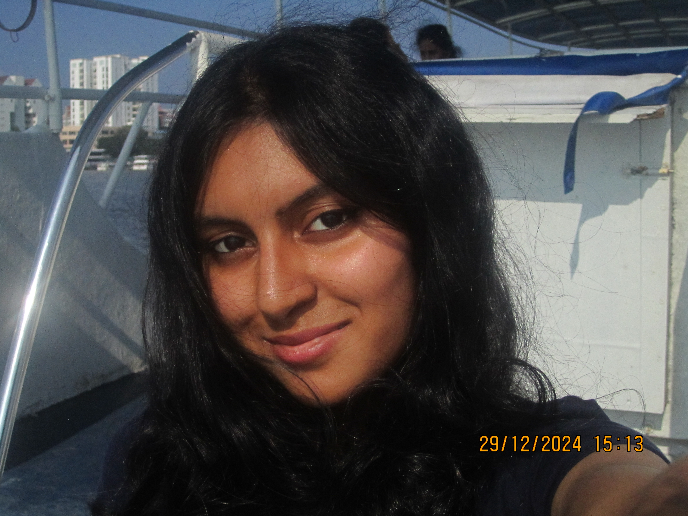

Hello,
I'm Anannya
A Full Stack Developer
From India
I'm passionate about Frontend, UI/UX, and Graphic Designing. I love turning ideas into clean, functional, and beautiful interfaces.
Hire Me

Hello,
From India
I'm passionate about Frontend, UI/UX, and Graphic Designing. I love turning ideas into clean, functional, and beautiful interfaces.
Hire MeI’m a professionally trained Carnatic singer and a tech enthusiast who finds creativity in both music and code. I enjoy working on meaningful web applications, building responsive UIs, and solving real-world problems with clean design and solid development practices.
I’ve worked on IoT Dashboards, data dashboards, and frontend-heavy applications using React, Express, and MongoDB. When I’m not coding, I’m probably designing, singing, or exploring new tools.